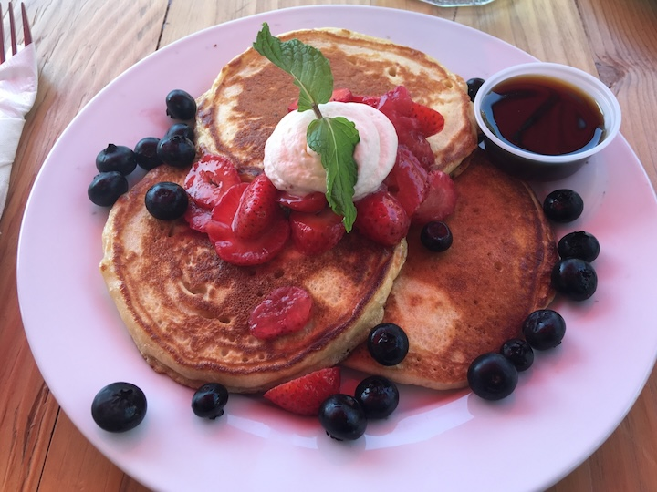

This recipe holds a very special place in my family. It became something of a tradition
for my sibling and I during our juvenile days, where we would wake up early on Sunday
mornings, hoping to snag just a few pancakes before the supply ran out, which usually
only transpired within a few minutes. In fact, when I told them I was adding the recipe
to my website for my web design design, they shared this anecdote with me:
These pancakes are actually so good. They're delicious in a way that only homemade pancakes feel, and that's what makes them so special.Here's the thing: The formula seems so basic, yet it manages to melt in your mouth like the best thing you've ever tasted. It was the feeling I only but yearned for as a kid, and I can't wait to share it with you in this straightforward yet delectable step-by-step recipe.
-WH
| Ingredients | Recipe |
|---|---|
|
|
| Makes about 12 5-inch pancakes. | |
Tips, Tricks, and & Substitutions
|
|